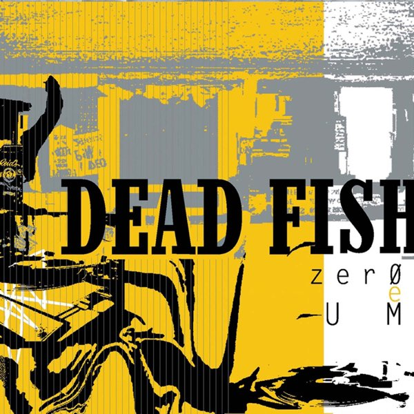

31 Days of Punk
The punk album for 12/11/2025 is:
Zero e Um
by Dead Fish
Ben's thoughts
*All translations are in Portuguese*
Connor and I often discuss how different cultures experience rock and roll, and our general philosophy is that the western cultures who invented and harbor a lot of this music (America and the U.K.) are spoiled. Our favorite bands constantly tour these countries and we essentially have these groups at our disposal, at least in a more accessible fashion than other countries. This pattern has in turn created hungrier fans in our neighboring continents, leading Connor and I to often joke about how crazy the fans in Central and South America are. It does not matter the rock band, they show out better than any other country, and I believe part of this is because they know that whatever band they are watching may not come back anytime soon (I highly suggest watching live videos of these crowds, they are insane). The other effect that this scarcity of western bands has created is a need for local groups to step up, which brings us to our album today.
While you may or may not know Dead Fish, the people of South America certainly do. This punk/hardcore band formed in 1991 in Vitória, Espírito Santo. Connor and I specifically chose this band as a tribute to our Brazilian roots, stemming from our grandmother, Neuza Stricker. Dead Fish was known for their fast shredding and booming percussion, and can be credited with some of the earliest hardcore sounds in their region. But how did they have this kind of reach considering they are not an American nor an English band? The answer is in their 2004 LP “Zero e Um” (Zero and One).
This smash hit album rocketed Dead Fish into mainstream popularity, over ten years past their inception. This may have been because the album is very reflective of the pop-punk style of the time (I think of this album/band as Brazilian Fall Out Boy). The central theme of this album is highlighting the ever-evolving digital society, with zero and one being a reference computer technology. They felt as though the oversaturation of digital media dehumanizes the culture around them. The opening track, “A urgência” (The Urgency) is a call to action stressing the need for halt in mass consumerism. “Re-Aprendar a Andar” (Relearning to Walk) is attempting to convey the bleak future of our society if it becomes over-reliant on digital technology, effectively stripping us of our ability to “walk on our own.” The messages of this politically charged album hold their relevancy today, solidifying Dead Fish as a contemporary super-circus, spreading their message in the best way possible, through punk rock.
Connor's thoughts
Benjamin mentioned our fondness for South American concert culture, and it’s not just there but really everywhere south of the Texas border. It’s not uncommon to look at your phone and see huge gatherings of fans rocking out to some of the greatest artists in the world on beaches, soccer stadiums, and other public stages, to which we sometimes take for granted in America and Europe (given lots of western acts tour there more often). It’s a beautiful thing and shows up in the numbers, with three of the largest shows ever (Rolling Stones, Lady Gaga, and Rod Stewart) having played on Copacabana beach in Rio (granted they are free shows). All of this is to say that it’s more than clear that our friends in the southern hemisphere LOVE their music, and really appreciate a great show. By product of the incredible music culture they have in South America, we got Dead Fish.
A skate-punk band out of my lovely Grandmother’s country of Brazil, Dead Fish is a passionate troupe of, of course, skaters, who turned toward music to express their opinions on societal issues in South America, like digital isolation and the importance of integrity in times of political conformity (The songs and their translations are unsurprisingly contemporary). They picked up their instruments with little experience, and in 2004 brought Brazil, and the world, their fourth studio album, Zero e Um (Zero and One). It’s the 14 track record that put Dead Fish on the map, landing them a deal with a major label, and a live session with MTV Brazil, all in the wake of the thousands of new fans around the globe. Now, it would be awful of me, and it would undersell the band to compare them to anything we have in America or Europe, however it is as clear through their writing, as it is their sound (as was also said in interviews) that they take inspiration from Dead Kennedys, Bad Brains, and other great acts, and while this might be true, it makes it all the more impressive they can produce such a distinct sound that hammers the themes of their lyrics into the heads of all who listen.
When Benjamin and I were looking for a few international punk bands to highlight on this list, we wanted to find something out of the country our Grandmother immigrated from. It’s important to me to be in touch with some of that culture, and while of course the lyrics of the record don’t remind me of her, nor does hearing a guy scream in Portuguese for 37 minutes make me miss her, it's that connection to her past that led me to look for this band. This album hits every mark you want it to hit. It’s hardcore, it’s heavy, it’s not too grimey, it’s not too pop-y, and most of all it’s punk music out the roof! I loved it and if my Grandmother was born 53 years later, I'd like to think this is what she would have been jamming out to.
Another international album, another phenomenal record, and it would not be a crazy statement to say that Dead Fish’s Zero e Um is a masterpiece in skate-punk, and of course, rock as a whole.
Listen on Spotify: